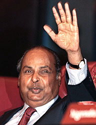

India’s largest private sector company. Created an equity cult in the Indian
capital market. Reliance is the first Indian company to feature in Forbes 500
list.
Dhirubhai Ambani was the most enterprising Indian entrepreneur. His life journey
is reminiscent of the rags to riches story. He is remembered as the one who
rewrote Indian corporate history and built a truly global corporate group.
Dhirubhai Ambani alias Dhirajlal Hirachand Ambani was born on December 28, 1932,
at Chorwad, Gujarat, into a Modh family. His father was a school teacher.
Dhirubhai Ambani started his entrepreneurial career by selling “bhajias” to
pilgrims in Mount Girnar over the weekends.
After doing his matriculation at the age of 16, Dhirubhai moved to Aden, Yemen.
He worked there as a gas-station attendant, and as a clerk in an oil company. He
returned to India in 1958 with Rs 50,000 and set up a textile trading company.
In 1992, Reliance became the first Indian company to raise money in global
markets, its high credit-taking in international markets limited only by India’s
sovereign rating. Reliance also became the first Indian company to feature in
Forbes 500 list.
Dhirubhai Ambani was named the Indian Entrepreneur of the 20th Century by the Federation of Indian Chambers of Commerce and Industry (FICCI). A poll conducted by The Times of India in 2000 voted him “greatest creator of wealth in the century”.
Dhirubhai Ambani died on July 6, 2002, at Mumbai.